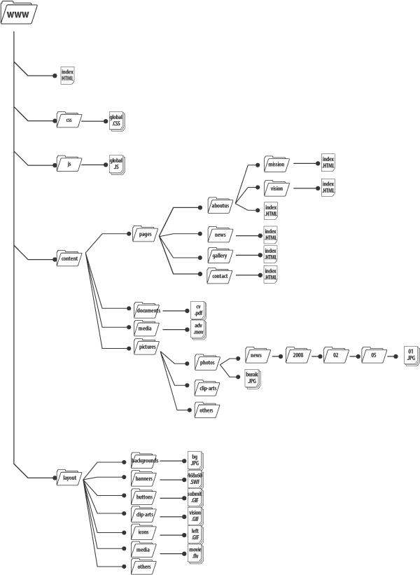

Web Geliştirme Eğitimi Dersleri, 011
5 Şubat 2008, Salı
001 - 010 Derslerinin Özeti
- Web Geliştirme Ortamları / Programlar ( IDE / TOOLS )
- Diğer browserlar, broweser extension'ları, html ve css için development extensionları
- File Encoding , UTF-8
- HTML - XHTML arasında farklar
- Yeni tag'ler, değişen tag'ler, özel kurallar / durumlar
- DOCTYPE nedir? Önemi Nedir?
- HTML sayfa yapısı : DOCTYPE / HEAD / BODY
- HTML elementleri, BLOCK-LEVEL / IN-LINE / Attribute, Property Nedir?
- CSS Nedir? Versiyon Farkları, Browser - CSS durumları
- CSS Deklarasyonları, ID - CLASS farkları, CSS Inheritancy ( Miras )
- Selectors, Box Modelling, Ölçü ve Renk sistemleri, Shorthand kullanımlar
- Positioning, Floating, Centering, Margin / Padding
- Tag'lerin CSS ile farklı amaçlar için kullanılması
- Semantik yapı, WEB 2.0 terminolojileri
- SEO Optimization, yeni nesil URL
- Code Validation ( xhtml, css, rss, xml )
Web projesi için File/Folder Structure

Genel web projeleri için düşündüğümüz dosya yapısı